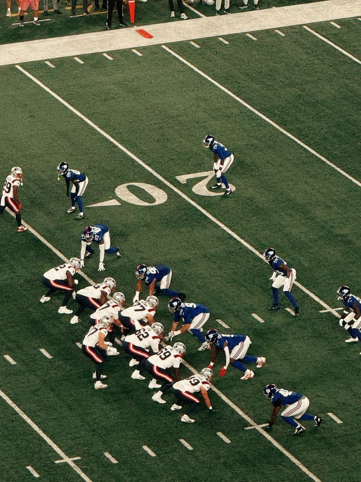
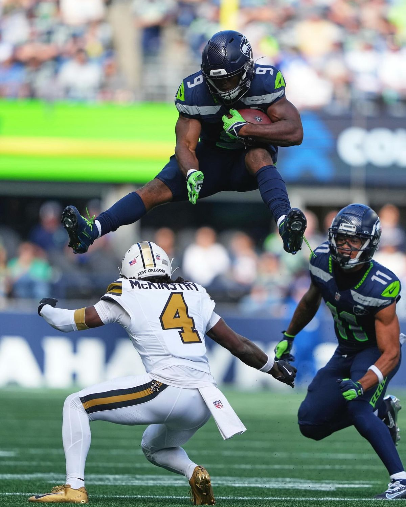
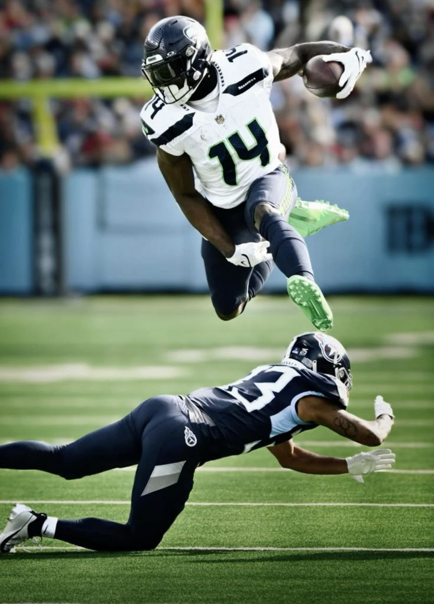
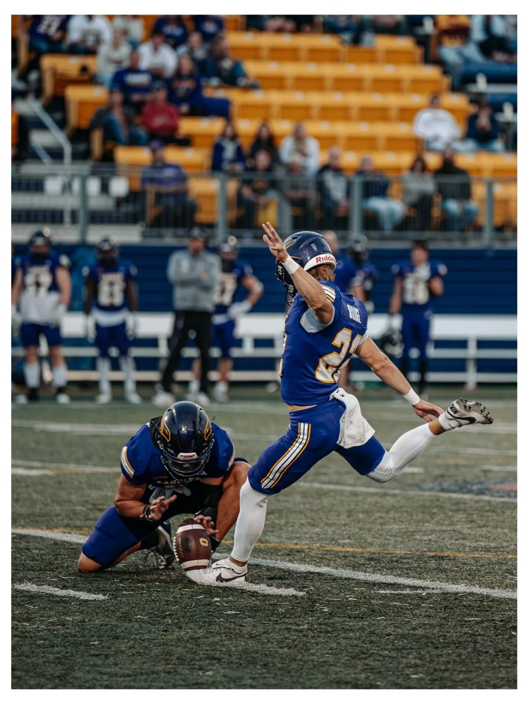

Zasady Footballu Amerykańskiego
Football amerykański wbrew pozorom ma zasady, które są łatwe do nauczenia się. Gra odbywa się na boisku o długości 100 jardów i szerokości 160 stóp (109.75m x 48.8m) przez 2 drużyny, składających się z 11 zawodników. Każda drużyna ma 4 próby, aby przesunąć piłkę o co najmniej 10 jardów do przodu. Jeśli drużynie nie uda się przesunąć piłki o 10 jardów w ciągu 4 prób, to następuje utrata piłki, na rzecz przeciwników. Celem jest przedostanie piłki do strefy touchdownu, za co dostaje się 6 punktów, oraz możliwość kopnięcia piłki nad poprzeczkę z odległości 18 jardów za 1 punkt. Jeżeli nie uda się zdobyć touchdownu, to można zdobyć punkty za field goal, czyli kopnięcie piłki nad poprzeczkę z dowolnej odległości.


Ofensywa
Jest to jeden z trzech składów, jakie liczy drużyna. Zadaniem ofensywy jest jak najsprawniejsze rozegranie piłki do przodu, za pomocą bieganięcia czy podań. Skład ofensywy przeciętnie składa się z:
- Quarterback - jest to najważniejsza pozycja w ofensywie, ponieważ to on jest odpowiedzialny za rozegranie piłki, czyli podanie jej do innego zawodnika lub podbiegnięcie z nią do przodu.
- Running back - jest to dwóch zawodników, którzy specjalizują się w bieganiu z piłką. Jego zadaniem jest zdobywanie jardów poprzez bieganie z piłką.
- Wide receiver - jest to kolejnych dwóch zawodników, którzy specjalizują się w łapaniu podań. Jego zadaniem jest zdobywanie jardów poprzez łapanie podań od quarterbacka.
- Offensive lineman - jest to sześciu zawodników, którzy specjalizują się w blokowaniu przeciwników, aby chronić quarterbacka i inne pozycje ofensywne.
Defensywa
Jest to drugi z trzech składów, jakie liczy drużyna. Zadaniem defensywy jest zatrzymanie ofensywy przeciwnika i niedopuszczenie do zdobycia punktów. Defensywa stara się powstrzymać akcje biegowe, przechwycić podania oraz powalić quarterbacka przeciwnika. Skład defensywy przeciętnie składa się z:
- Defensive lineman - jest to czterech zawodników, którzy specjalizują się w zatrzymywaniu akcji biegowych oraz wywieraniu presji na quarterbacku przeciwnika. Ich zadaniem jest przebicie się przez linię ofensywną.
- Linebacker - jest to trzech zawodników, którzy pełnią bardzo uniwersalną rolę. Mogą zatrzymywać biegi, kryć zawodników łapiących podania oraz atakować quarterbacka przeciwnika.
- Cornerback - jest to dwóch zawodników, którzy specjalizują się w kryciu wide receiverów przeciwnika. Ich zadaniem jest utrudnianie łapania podań oraz przechwytywanie piłki.
- Safety - jest to dwóch zawodników ustawionych najdalej od linii wznowienia akcji. Są ostatnią linią obrony i pomagają zarówno w kryciu podań, jak i zatrzymywaniu biegnących zawodników.


Teamy specjalne
Jest to ostatni z trzech składów, jakie liczy drużyna. Zadaniem teamów specjalnych jest wykonywanie wykopów, rozpoczynanie akcji oraz odzyskiwanie piłki podczas specjalnych sytuacji meczowych. Teamy specjalne pojawiają się głównie podczas kickoffów, puntów oraz prób kopnięcia za punkty. Skład teamów specjalnych przeciętnie składa się z:
- Kicker - jest to zawodnik odpowiedzialny za wykonywanie wykopów, kickoffów oraz field goali. Jego zadaniem jest zdobywanie punktów poprzez kopnięcia oraz jak najdalsze wykopy piłki.
- Punter - jest to zawodnik odpowiedzialny za wykonywanie puntów. Jego zadaniem jest wykopanie piłki jak najdalej, aby przeciwnik rozpoczynał akcję z gorszej pozycji na boisku.
- Long snapper - jest to zawodnik specjalizujący się w dalekim i bardzo dokładnym podawaniu piłki do puntera lub kickera podczas akcji specjalnych.
- Returner - jest to jeden lub dwóch zawodników odpowiedzialnych za łapanie wykopów przeciwnika i zdobywanie jardów poprzez bieganie z piłką po złapaniu kickoffu lub puntu.
- Gunner - jest to zawodnik, którego zadaniem jest jak najszybsze dotarcie do returnera przeciwnika podczas puntów i zatrzymanie go przed zdobyciem dużej liczby jardów.